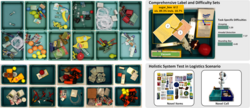
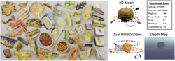
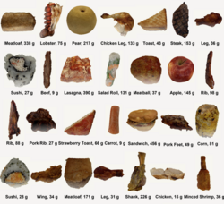

Publications
Selected publications, organized around the four application areas of my research on interactive digital twins. For the complete list of 93 papers, please see my Google Scholar profile.
Datasets
MetaGraspNet

MetaFood3D Dataset

NutritionVerse 3D

Food
Video-based dietary monitoring, 3D food geometry and portion measurement, and generative models for food.
-
Y. Chen, G. Vinod, S. Raghavan, T. I. Mahmud, B. Coburn, J. Ma, F. Zhu, and J. He, “Implicit-Scale 3D Reconstruction for Multi-Food Volume Estimation from Monocular Images,” in IEEE Southwest Symposium on Image Analysis and Interpretation (SSIAI), 2026, pp. 61–64.
-
J. He, Y. Chen, G. Vinod, X. Zhang, T. I. Mahmud, A. AlMughrabi, U. Haroon, R. Marques, P. Radeva, Y. Jueluo, C. Shi, P. Wang, P. Xi, A. Wong, and F. Zhu, “Physically Informed 3D Food Reconstruction: Methods and Results,” IEEE Journal of Biomedical and Health Informatics, 2026.
-
X. Pan, Y. Chen, J. He, and F. Zhu, “Food Image Generation on Multi-Noun Categories,” in IEEE/CVF Winter Conference on Applications of Computer Vision (WACV), 2026.
-
E. Z. Zeng, Y. Chen, and A. Wong, “SCALEX: Scalable Concept and Latent Exploration for Diffusion Models,” in IEEE/CVF Winter Conference on Applications of Computer Vision (WACV), 2026.
-
X. Pan, Y. Chen, and F. Zhu, “Training-Free Text-to-Image Compositional Food Generation via Prompt Grafting,” in IEEE Conference on Artificial Intelligence (CAI), 2026, pp. 1282–1289.
-
F. Wu and Y. Chen, “FruitNinja: 3D Object Interior Texture Generation with Gaussian Splatting,” in IEEE/CVF Conference on Computer Vision and Pattern Recognition (CVPR), 2025, pp. 11051–11060.
-
C.-e. A. Tai, M. Keller, S. Nair, Y. Chen, Y. Wu, O. Markham, K. Parmar, P. Xi, and A. Wong, “NutritionVerse3D2D: Large 3D Object and 2D Image Food Dataset for Dietary Intake Estimation,” Data, vol. 10, no. 11, p. 180, 2025.
-
J. Li, F. J. Peña Cantu, E. Yu, A. Wong, Y. Cui, and Y. Chen, “SAMJAM: Zero-Shot Video Scene Graph Generation for Egocentric Kitchen Videos,” in CVPR Workshops, 2025, pp. 467–473.
-
K. Shah, S. Viswanath, P. Xi, A. Wong, and Y. Chen, “FoodVideoQA: A Novel Baseline Framework for Dietary Monitoring,” in CVPR Workshops, 2025, pp. 458–466.
-
J. Valdes, S. Liu, S. Yang, Y. Chen, A. Wong, and P. Xi, “Food Degradation Analysis Using Multimodal Fuzzy Clustering,” in CVPR Workshops, 2025, pp. 420–429.
-
Y. Chen, J. He, C. Czarnecki, G. Vinod, T. I. Mahmud, S. Raghavan, J. Ma, D. Mao, S. Nair, P. Xi, A. Wong, E. Delp, and F. Zhu, “MetaFood3D: Large 3D Food Object Dataset with Nutrition Values,” arXiv:2409.01966, 2024.
-
A. Sharma, C. Czarnecki, Y. Chen, P. Xi, L. Xu, and A. Wong, “How Much You Ate? Food Portion Estimation on Spoons,” in CVPR Workshops, 2024, pp. 3761–3770.
-
E. Z. Zeng, Y. Chen, and A. Wong, “Understanding the Limitations of Diffusion Concept Algebra Through Food,” in MetaFood Workshop, CVPR, 2024.
-
A. Pathiranage, C. Czarnecki, Y. Chen, P. Xi, L. Xu, and A. Wong, “In the Wild Ellipse Parameter Estimation for Circular Dining Plates and Bowls,” in MetaFood Workshop, CVPR, 2024.
-
C.-e. A. Tai, M. Keller, S. Nair, Y. Chen (corresponding author), Y. Wu, O. Markham, K. Parmar, P. Xi, H. Keller, S. Kirkpatrick, and A. Wong, “NutritionVerse: Empirical Study of Various Dietary Intake Estimation Approaches,” in 8th ACM International Workshop on Multimedia Assisted Dietary Management, 2023, pp. 11–19.
-
O. Markham, Y. Chen, A. Tai, and A. Wong, “FoodFusion: A Latent Diffusion Model for Realistic Food Image Generation,” in New in Machine Learning Workshop, NeurIPS, 2023.
-
S. Nair, A. Tai, Y. Chen, and A. Wong, “NutritionVerse-Synth: An Open Access Synthetically Generated 2D Food Scene Dataset for Dietary Intake Estimation,” in New in Machine Learning Workshop, NeurIPS, 2023.
-
G. Sinha, K. Parmar, H. Azimi, A. Tai, Y. Chen, A. Wong, and P. Xi, “Transferring Knowledge for Food Image Segmentation Using Transformers and Convolutions,” in 2nd Workshop on Computer Vision in the Wild, CVPR, 2023.
Sports
Reconstructing players and gameplay from broadcast video: 3D human mesh recovery, rink registration, action recognition, tracking, and puck localization.
-
Z. Wang, A. Nazemi, S. Rambhatla, Y. Chen, and D. A. Clausi, “Game Context-Aware 3D Human Mesh Recovery in Ice Hockey,” in CVPR Workshops, 2026, pp. 10077–10086.
-
M. Koshkina, T. Pilla, A. Nazemi, Y. Chen, J. S. Zelek, and D. A. Clausi, “Transition-Constrained Sequence Modeling for Fine-Grained Skating Action Recognition,” in CVPR Workshops, 2026, pp. 10028–10037.
-
M. Koshkina, Y. Chen, J. S. Zelek, and D. A. Clausi, “A Lightweight Tracking-Based Motion Stream for Hockey Skating Action Recognition,” in 9th International Workshop on Multimedia Content Analysis in Sports (MMSports), ACM Multimedia, 2026.
-
Z. Wang, A. Nazemi, S. Liu, S. Rambhatla, Y. Chen, and D. A. Clausi, “Boundary-Aware Semantic Segmentation for Ice Hockey Rink Registration,” Computer Vision and Image Understanding, p. 104627, 2025.
-
K. Buzko, A. Nazemi, D. A. Clausi, and Y. Chen, “Ice Hockey Action Recognition via Contextual Priors,” in Linköping Hockey Analytics Conference (LINHAC), 2025. Best Research Paper Award
-
D. Khanna, J. Bright, Y. Chen, and J. Zelek, “SportMamba: Adaptive Non-Linear Multi-Object Tracking with State Space Models for Team Sports,” in CVPR Workshops, 2025, pp. 6143–6153.
-
L. Salass, J. Bright, A. Nazemi, Y. Chen, J. Zelek, and D. Clausi, “Ice Hockey Puck Localization Using Contextual Cues,” in CVPR Workshops, 2025, pp. 6060–6069.
-
J. Bright, Z. Wang, D. Klepachevskyi, Y. Chen, S. Rambhatla, D. A. Clausi, and J. S. Zelek, “Avatar4D: Synthesizing Domain-Specific 4D Humans for Real-World Pose Estimation,” arXiv:2512.16199, 2025.
-
J. Bright, Y. Chen, and J. S. Zelek, “DreamPose3D: Hallucinative Diffusion with Prompt Learning for 3D Human Pose Estimation,” arXiv:2511.09502, 2025.
-
J. Bright, Z. Wang, Y. Chen, S. Rambhatla, D. A. Clausi, and J. S. Zelek, “Gen4D: Synthesizing Humans and Scenes in the Wild,” in Computer Vision in the Wild Workshop, CVPR, 2025.
-
B. Balaji, J. Bright, Y. Chen, S. Rambhatla, J. S. Zelek, and D. A. Clausi, “Seeing Beyond the Crop: Using Language Priors for Out-of-Bounding Box Keypoint Prediction,” in Advances in Neural Information Processing Systems (NeurIPS), 2024, pp. 102897–102918.
-
J. Bright, B. Balaji, H. Prakash, Y. Chen, D. A. Clausi, and J. S. Zelek, “Distribution and Depth-Aware Transformers for 3D Human Mesh Recovery,” in Conference on Robots and Vision (CRV), 2024. Best Paper Award
-
J. Bright, B. Balaji, Y. Chen, D. A. Clausi, and J. S. Zelek, “PitcherNet: Powering the Moneyball Evolution in Baseball Video Analytics,” in CVPR Workshops, 2024, pp. 3420–3429.
-
B. Balaji, J. Bright, S. Rambhatla, Y. Chen, A. Wong, J. S. Zelek, and D. A. Clausi, “Domain-Guided Masked Autoencoders for Unique Player Identification,” in Conference on Robots and Vision (CRV), 2024.
-
H. Prakash, J. C. Shang, K. M. Nsiempba, Y. Chen, D. A. Clausi, and J. S. Zelek, “Multi Player Tracking in Ice Hockey with Homographic Projections,” in Conference on Robots and Vision (CRV), 2024.
-
V. Chomko, Y. Chen, D. Clausi, and A. Wong, “Synthetic Local Data Augmentation,” in IEEE 26th International Workshop on Multimedia Signal Processing (MMSP), 2024.
-
J. C. Shang, Y. Chen, M. J. Shafiee, and D. A. Clausi, “Rink-Agnostic Hockey Rink Registration,” in 6th ACM International Workshop on Multimedia Content Analysis in Sports, 2023, pp. 73–81.
-
B. Balaji, J. Bright, H. Prakash, Y. Chen, D. A. Clausi, and J. Zelek, “Jersey Number Recognition Using Keyframe Identification from Low-Resolution Broadcast Videos,” in 6th ACM International Workshop on Multimedia Content Analysis in Sports, 2023, pp. 123–130.
-
J. Bright, Y. Chen, and J. Zelek, “Mitigating Motion Blur for Robust 3D Baseball Player Pose Modeling for Pitch Analysis,” in 6th ACM International Workshop on Multimedia Content Analysis in Sports, 2023, pp. 63–71.
Construction
Long-term UAV-based monitoring of outdoor construction sites: change detection, progress monitoring, and large-scale reconstruction.
-
D. Mao, Y. Lin, A. Ebadi, J. S. Zelek, A. Wong, and Y. Chen, “iVISION-2DCD: A Long-Term Change Detection Dataset for Large-Scale Outdoor Construction Monitoring,” arXiv:2607.03553, 2026.
-
L. Zhou, D. Mao, Y. Lin, A. Ebadi, A. Wong, and Y. Chen, “Reducing Closeup Frequency Artifacts for Level-of-Detail 3D Gaussian Splatting,” in CVPR Workshops, 2026, pp. 370–378.
-
A. Ebadi, Y. Chen, F. Jalaei, D. Mao, and A. Wong, “AI-Driven Insights into Construction Progress Monitoring,” Preprints, 2026.
-
D. Mao, Y. Lin, Y. S. Hu, M. Gupta, M. Lou, F. Jalaei, S. Razavialavi, A. Ebadi, A. Wong, and Y. Chen, “Elevating Construction Progress Monitoring: A Comprehensive UAV-Based System for Long-Term Outdoor Construction Site Mapping,” in CSCE Construction Specialty Conference / ASCE Construction Research Congress (CRC), 2025.
Robotics and Embodied AI
Grasping and bin picking, real-time Gaussian-splatting SLAM, 3D scene graphs, and embodied question answering.
-
Q. Wu, K. Gao, D. Long, D. A. Clausi, J. Li, and Y. Chen, “KitchenTwin: Semantically and Geometrically Grounded 3D Kitchen Digital Twins,” in CVPR Workshops, 2026, pp. 9632–9640.
-
Y. S. Hu, N. Abboud, M. Q. Ali, A. S. Yang, I. Elhajj, D. Asmar, Y. Chen, and J. S. Zelek, “MGSO: Monocular Real-Time Photometric SLAM with Efficient 3D Gaussian Splatting,” in IEEE International Conference on Robotics and Automation (ICRA), 2025.
-
Y. Xu, F. Zhu, Y. Li, S. Ren, X. Huang, and Y. Chen, “RGBSQGrasp: Inferring Local Superquadric Primitives from Single RGB Image for Graspability-Aware Bin Picking,” in IROS Workshop on Benchmarking via Competitions in Robotic Grasping and Manipulation, 2025. Best Workshop Paper Award
-
M. Q. Ali, S. Nair, A. Wong, Y. Cui, and Y. Chen, “GraphPad: Inference-Time 3D Scene Graph Updates for Embodied Question Answering,” in Workshop on 3D-LLM/VLA, CVPR, 2025.
-
F. J. Peña Cantu, J. Lei, V. Agrawal, A. Ramlal, C. Liu, J. Li, S. Nair, Y. Xu, M. Q. Ali, A. Wong, Y. Cui, and Y. Chen, “Office Hours: A Multiday Office Cubicle Dataset for Associative Embodied VQA,” preprint, 2025.
-
Y. Liu, Y. S. Hu, Y. Chen, and J. Zelek, “SplatPose+: Real-Time Image-Based Pose-Agnostic 3D Anomaly Detection,” in European Conference on Computer Vision (ECCV) Workshops, 2024.
-
Y. Huang, Y. Chen, and J. Zelek, “Zero-Shot Monocular Motion Segmentation in the Wild by Combining Deep Learning with Geometric Motion Model Fusion,” in CVPR Workshops, 2024, pp. 2733–2743.
-
M. Gilles, Y. Chen, E. Z. Zeng, Y. Wu, K. Furmans, A. Wong, and R. Rayyes, “MetaGraspNetV2: All-in-One Dataset Enabling Fast and Reliable Robotic Bin Picking via Object Relationship Reasoning and Dexterous Grasping,” IEEE Transactions on Automation Science and Engineering, 2023.
-
Y. Chen, H. Gunraj, E. Z. Zeng, R. Meyer, M. Gilles, and A. Wong, “MMRNet: Improving Reliability for Multimodal Object Detection and Segmentation for Bin Picking via Multimodal Redundancy,” in CVPR Workshops, 2023, pp. 68–77.
-
A. Wong, Y. Wu, S. Abbasi, S. Nair, Y. Chen, and M. J. Shafiee, “Fast GraspNeXt: A Fast Self-Attention Neural Network Architecture for Multi-Task Learning in Computer Vision Tasks for Robotic Grasping on the Edge,” in CVPR Workshops, 2023, pp. 2292–2296.
-
E. Z. Zeng, Y. Chen, and A. Wong, “ShapeShift: Superquadric-Based Object Pose Estimation for Robotic Grasping,” in CVPR Workshops, 2023.
-
M. Gilles, Y. Chen (equal contribution), T. R. Winter, E. Z. Zeng, and A. Wong, “MetaGraspNet: A Large-Scale Benchmark Dataset for Scene-Aware Ambidextrous Bin Picking via Physics-Based Metaverse Synthesis,” in IEEE 18th International Conference on Automation Science and Engineering (CASE), 2022, pp. 220–227. Best Conference and Application Paper Award finalist